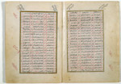

|
23. Alles-in-één handboek uit Jemen
Ibn al-Muqri’, cUnwan al-Šaraf. Arabisch. Handschrift op papier,
60 ff., 210 x 150 mm. Turkije, gedateerd 1171 AH (1757/1758). -- (Or. 14.530)
Šaraf al-Din Ibn al-Muqri’
(1363-1433) was een Jemenitisch geleerde, die onderwijs heeft gegeven aan de Mugahidiyya
‘madrasa’ in Tacizz en de Nizamiyya ‘madrasa’ in Zabid,
beide in Jemen. In Zabid bekleedde hij ook het ambt van rechter. Hij is de auteur van dit
alles-in-één handboek. Het boek bevat tegelijkertijd vijf verschillende teksten, over
geheel verschillende onderwerpen, die per kolom en per pagina worden gecontinueerd. Dit
gaat als volgt: 7 6 5 4 3 2 1.
Kolom 1 bevat een verhandeling over de Arabische metriek; kolom 3 over de geschiedenis
van de Rasuli-dynastie in Jemen (1228-1454); kolom 5 over de Arabische grammatica; kolom 7
over het rijm in de Arabische poëzie, terwijl de kolommen 2, 3, 4, 5 en 6, gezamenlijk
horizontaal gelezen, een verhandeling over het mohammedaanse recht bevatten volgens de
Šaficitische school. Aan het einde van dit handboek voltooit de auteur
zijn kunststuk, door zijn teksten ook alle gelijk te laten eindigen.
Boeken die uitgevoerd zijn als de cUnwan al-Šaraf zijn een
zeldzaamheid in de Arabische literatuur, en waarschijnlijk niet alleen daar. Er is een
navolging door de Egyptische auteur al-Suyuti uit de vijftiende/zestiende eeuw bekend
onder de titel al-Nafha al-Miskiyya, en misschien zijn er nog wel meer Arabische
auteurs onder de bekoring van een dergelijke ingenieuze indeling gekomen. De kroon in dit
genre wordt duidelijk gespannen door het boek, getiteld al-Tuhfa al-Saniyya, dat is
geschreven door cAbdallah Efendi al-Wassaf. Dat werk is net als de cUnwan
al-Šaraf ingedeeld in kolommen, maar dan in wel twaalf, met te zamen zeven
teksten. De kolommen l, 3, 5, 7, 9 en 11 bevatten, indien apart gelezen, respectievelijk
een verhandeling over filosofie, over logica, over dogmatiek, over Arabische grammatica,
een verhaal in het Perzisch en een in het Turks. Wanneer men de kolommen l tot en met 12
van al-Wassafs boek horizontaal achtereen leest vormen deze te zamen ook nog een
doorlopende tekst.
Literatuur
- C. Brockelmann, Geschichte der arabischen Litteratur. Leiden 1937-1949, G II, p.
190-191.
|